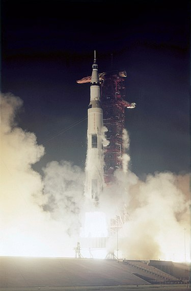
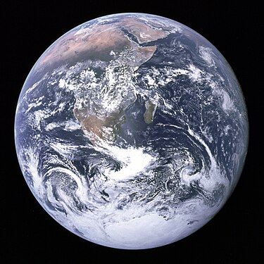
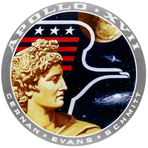
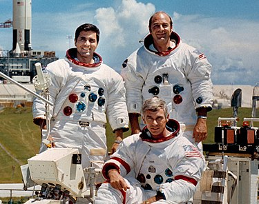

A Wikipédiából, a szabad enciklopédiából
Az Apollo–17 volt az Apollo-program tizenegyedik repülése emberekkel az űrhajó fedélzetén, egyben a hatodik – és utolsó – olyan, amely leszállt a Holdon. A program átszervezése miatt – bár eredetileg még három további expedíció követte volna – ez lett az utolsó leszállás a Holdon, amely végül rekordokat hozott. 12 nap 13 óra 51 perc 59 másodperces teljes repülési ideje, 22 óra 3 perc 57 másodperces holdfelszínen töltött ideje, 35,7 kilométeres, holdjáróval megtett távolsága és 110,52 kilogrammnyi összegyűjtött holdkőzetmintája mind-mind rekordnak számít az összes Apollo-repülés között. Az Apollo–17 két nagyobb újítást is hozott az utolsó repülésre. Ezek egyike az éjszakai start, a másik, hogy a legénység egyik tagja geológus volt.
A repülést jóval megelőzően, még 1961-ben született a javaslat a tudományos közösség részéről, hogy ne csak berepülő pilótákat, hanem tudósokat is képezzen ki a NASA és juttasson fel űrhajósként az űrbe vagy a Holdra. Az űrügynökség egy teljes űrhajós-válogatási fordulót szentelt ennek a kezdeményezésnek, ahol kizárólag tudományosan képzett embereket kerestek, és végül ki is választottak egy hat főből álló csoportot, amelynek orvos, fizikus, mérnök és geológus tagjai voltak. Végül különböző tagcserékkel és felsőbb politikai nyomásra a csoport geológus tagja kapott helyet az utolsó holdra szállás legénységében. Így nevezte ki Deke Slayton, a NASA repülőszemélyzeteinek főnöke az utolsó legénységet: Gene Cernan parancsnok, Ron Evans, a parancsnoki modul pilótája és Jack Schmitt (geológus) holdkomppilóta.
A leszállóhely kiválasztását nagy várakozások előzték meg, az eredeti listáról számos jelölt volt még hátra, a korábbi repülések is termeltek ki további érdekes leszállóhelyjelölteket, ezekből kellett választani. A NASA választása egy új jelöltre, a Taurus-Littrow-völgyre esett, amelyet az Apollo–15 Hold körüli keringéséből végzett megfigyelések során emeltek ki, mivel a helyszínt furcsa sötét talajtakaró fedte, amelyet a tudósok esetleg vulkáni tevékenység eredményének tudtak be. Emellett a helyszín az eredeti, ősi holdfelszín anyagának megtalálására és mintaként való összegyűjtésére is lehetőséget mutatott, így két célt is kiszolgálhatott volna a tudósok szerint, ezért tartották különösen megfelelőnek az utolsó repülésre.
Az indulásra 1972. december 7-én, helyi idő szerint 00:33:00-kor (05:33:00 UTC) került sor, az éjszakai start rendkívüli látványosságot tartogatott a körülbelül 500 000 helyszíni nézőnek. A választott pálya abban is újdonságot hordozott, hogy a földi parkolópályán nem másfél, hanem két keringésnyi időt töltött az űrhajó, és a Hold irányú hajtóműgyújtás az Atlanti-óceán felett történt meg. Cernanék eseménytelen út után, négy nap múltán érték el a Holdat, majd az America és a Challenger szétvált, és utóbbi rendben leszállt a Mare Serenitatis peremén fekvő – a környező Taurus-hegységről és egy nagyobb kráterről, a Littrow-kráterről elnevezett Taurus-Littrow-völgyben.
A leszállást követően az űrhajósok három holdsétára készülődtek. Az első alkalommal a rover és a különböző eszközök kipakolását, üzembe helyezését követően az ALSEP felállítása volt a fő feladat, majd ezt követően – némileg az ALSEP-pel való késlekedés miatti időhiány okán – egy nagyon rövid geológiai kutatóút következett, egyetlen felszíni formáció meglátogatásával. Ezen a holdsétán történt egy kisebb, de később szimbolikussá vált baleset, a parancsnok véletlenül letörte a holdjáró egyik sárvédőjét (amelyet egy rögtönzött megoldással sikerült pótolni). Később ez az epizód vált annak a szimbólumává, hogy a világűr felfedezése közben az ember a leghatékonyabb, aki adott helyzetben rögtönözni is képes, szemben az automatákkal, űrszondákkal, amelyek ilyenkor kudarcot vallanak. A második holdséta során egy hosszabb kutatóútra indultak az űrhajósok, amelynek során öt geológiai állomást érintettek, amelyek egyikén szenzációs felfedezést tettek, narancsszínű talajt találtak (később kiderült, hogy a vulkáni eredetűnek hitt talajréteget félreazonosították). A harmadik holdsétán az űrhajósok a völgyet övező hegyek közé mentek, és ott végeztek kutatómunkát négy geológiai állomáson.
A három holdsétát lezárva a holdkomp utasai rendben felszálltak a holdfelszínről, dokkoltak az anyaűrhajóhoz, csatlakoztak az addig a Hold körül keringő Ron Evanshez, és folytatták a megfigyeléseket. További másfél nap múltán a 75. keringésben jött el az ideje a hazavezető irányra állni, és újabb négy nap múltán az űrhajó leszállt a Csendes-óceánon, ahol a kiemelésére érkező USS Ticonderoga anyahajó várta. Az Apollo–17 1972. december 19-i leszállásával véget ért az Apollo–program űrrepülési része (míg a kihelyezett műszerekkel a megfigyelések egészen 1977-ig folytatódtak), és az azóta eltelt időben nem járt ember a Holdon (így máig Gene Cernan parancsnok az utolsó ember, aki lábnyomát a Holdon hagyta).
Személyzet
| Beosztás | Űrhajós |
|---|---|
| Parancsnok |
Dave Scott (2) űrrepülés |
| A parancsnoki egység pilótája |
Al Worden (1) űrrepülés |
| Holdkomp pilóta |
Jim Irwin (1) űrrepülés |
Tartalék Személyzet
Eredeti legénység
| Beosztás | Űrhajós |
|---|---|
| Parancsnok |
Dave Scott (2) űrrepülés |
| A parancsnoki egység pilótája |
Al Worden (1) űrrepülés |
| Holdkomp pilóta |
Jim Irwin (1) űrrepülés |
Cserelegénység
| Beosztás | Űrhajós |
|---|---|
| Parancsnok |
DJohn Young (6) űrrepüléss |
| A parancsnoki egység pilótája |
Stu Roosa (1) űrrepülés |
| Holdkomp pilóta |
Charlie Duke (1) űrrepülés |
(zárójelben a személyenként elvégzett űrrepülések száma, beleértve ezt a missziót is)
Előzmények
A program kezdetei
Az egész Apollo-program egy dinamikusan fejlődő folyamatként is leírható, tanulási és fejlődési lépcsőfokokkal, amely a szovjetek ideológiai legyőzésétől egészen a Hold aprólékos tudományos felfedezéséig jutott el. A folyamat kulcsa az volt, hogy az egyes küldetések sikere adta a stafétabotot az eggyel magasabb fejlettségi szintet jelentő repüléshez, különösen a program elején. A rengeteg előkészítő, ember nélküli, automata repülés után az első előirányzott, emberrel végzett próbarepülés az Apollo–1 útja lett volna, ám az váratlan tragédiába torkollott: a kapkodó, sokszor rossz minőségű munkával elkészülő űrhajó és a szintén rossz tervezésen alapuló tisztaoxigén-atmoszféra miatt tűz ütött ki az űrhajón, amely megölte Gus Grissomot, Ed White-ot és Roger Chaffee-t. A baleset kivizsgálása és a hibák kijavítása után a program újraindulását jelentő Apollo–7 repülésen sikerrel próbálták ki a program egyik sarokkövének számító holdűrhajót, az Apollo parancsnoki és műszaki egységet (CSM).[1]
Ezt követően a szovjetekkel vívott párharc miatt versenytempóra váltottak az események. A CIA hírszerzési adatai szerint a szovjeteknek esélyük volt megnyerni a Holdért folyó versenyt, ezért a NASA mindent megtett, hogy a nagy presztízsértékű repüléseket előrébb hozza. Ilyen volt a Hold elsőkénti megkerülése. Az Apollo–8 1968 karácsonyán, mindjárt a program második, ember vezette repülésén ennek teljesítése érdekében indult útnak; Frank Borman, Jim Lovell és Bill Anders lehettek az első emberek, akik a szomszéd égitest megkerülésekor saját szemükkel pillanthatták meg a Hold mindig elforduló túloldalát. A világsiker után ismét rutinszerűbb, próba jellegű repülés következett, az Apollo–9, amely a vadonatúj holdkompot próbálta ki és bizonyította a koncepció életképességét. Az Apollo–10 ismét a Holdhoz indult, hogy a holdra szállás elképzelésének minden technikai mozaikját összeillessze és kipróbálja, de még tényleges leszállás nélkül. Ezen a technológiai létrán jutott el végül a NASA abba a stádiumba, hogy immár végérvényesen legyőzve a szovjeteket elsőként juttasson embert a Holdra.[2][3][4][5][6][7]
A repülés
Start és odaút
 A NASA az utolsó repülésre változtatott a startprofilon, a korábbi, Csendes-óceán feletti holdirányú gyújtást felcserélték az Atlanti-óceán feletti indítással és másfél helyett két keringésig maradt földi parkolópályán az űrhajó. Ehhez az újdonsághoz még egy újítás tartozott, éjszakai startra volt hozzá szükség, az Apollo-program első és egyetlen éjszakai indítására. A látványosság és az utolsó repülés státusza miatt a közfigyelem rövid időre ismét a NASA felé fordult, így körülbelül 500 000 nézőt vonzott a Cape Canaveral környéki kilátóhelyekre a start, míg a VIP-lelátókra maga a NASA hívott meg számtalan illusztris vendéget, köztük például Charlie Smith-t, Amerika legidősebb emberét, egy 113 éves, színes bőrű aggastyánt, aki még rabszolgának született.
A startot eredetileg 1972. december 6. éjfél előttre tűzték ki, ám a startelőkészületek során egy 2 óra 40 perces startleállást kellett beiktatni egy kisebb hiba elhárítása miatt – egyben ez volt az egész Apollo-program egyetlen olyan hibája, amely késleltetett egy indítást. Ennek elhárultával és a startengedély irányítás általi újbóli megadása után az Apollo–17 másnap, helyi idő szerint 1972. december 7-én, 00:33:00-kor (05:33:00 UTC) indult útnak. A Saturn V éjszakai startjára jellemző, hogy a megfigyelők szerint a helyszínen nappali világosság támadt a hajtóművek beindulása nyomán, de még 800 kilométer távolságból is látni lehetett az ég alján egy vöröses derengést, mintha a Nap kelne fel éppen.
A start tökéletesen sikerült, a két keringés alatt végrehajtott rendszerellenőrzések is mindent rendben találtak. A startot 3 óra 13 perccel követően az űrhajósok ismét beindították az S-IVB egyetlen hajtóművét, és az Apollo–17 holdirányú pályára állt, amelyet az úgynevezett hibrid-transzfer pályán közelített meg. Erre a pályára való átállás a holdkomp retrakció manővere után került sor a repülés 3:42:27 órájában. Ezt követően eseménytelen út várt a legénységre egészen a Holdig. Ennek során először repültek úgy az űrhajósok a program történetében, hogy a Föld-Hold rendszerben olyan pozíciót foglaljanak el, hogy tökéletes „teleföldet” fotózzanak.
A repülés utóélete
Az Apollo–17-et a program átírásától és megkurtításától fogva mindenki a holdprogram utolsó repüléseként tartotta számon. Azonban az USA Holdat érintő szándékai már a hazaúton kiviláglottak. Richard Nixon elnök beolvasott üzenetének egy félmondata – …talán ez az utolsó alkalom ebben az évszázadban, hogy ember jár a Holdon… – megvilágította, hogy az USA és a NASA felhagy a Hold, vagy akár más égitestek kutatásával, már ami az emberes űrrepüléseket illeti. Cernan parancsnok és Schmitt holdkomppilóta ezt fájdalmasan értékelte, és később hangot is adtak ebbéli elégedetlenségüknek.[50] Nixon jóslata igaznak bizonyult, űrhajósok az elmúlt közel fél évszázadban nem tértek vissza a Holdra, bár születtek erre vonatkozó kezdeményezések, amelyek elbuktak.[51]
Az Apollo-program pénzügyi támogatására a NASA költségvetésében 1973-ban szerepelt utoljára összeg, így 1974-ben pénzügyi források híján a programot leállították. A tudományos tevékenység 1977. szeptember 30-án ért véget, amikor az ALSEP-műszerek nyomon követésével is leállt az űrügynökség.[52][53]
Repülési adatok
- Tömeg
- Teljes tömeg: 2 923 387 kg
- Szállított teher: 46 678 kg
- Föld megkerülése: 2-szer odafelé, hozzávetőlegesen 1-szer visszaútban
- Hold megkerülése: 75-ször
- Földközel: 168,9 km
- Földtávol: 171,3 km
- Inklináció: 28,526°
- Keringési idő: 87,83 perc
Jegyzetek
Források
| Apollo-17 | |
|---|---|
| Apollo program | |
|  | |
| Személyzet | |
| Repülésadatok | |
|---|---|
| Ország |
USA

|
| Űrügynökség | NASA |
| Hjvójel | parancsnoki modul - America holdkomp - Challenger |
| Személyzet | Eugene Cernan parancsnok |
| Harrison Schmitt geológus, holdkomppilóta | |
| Ronald Evans, a parancsnoki modul pilótája | |
| Tartalék személyzet | John Young parancsnok |
| Stu Roosa, a parancsnoki egység pilótája | |
| Charlie Duke holdkomppilóta | |
| Hordozórakéta | Saturn V, AS-512 |
| A repülés paraméterei | |
|---|---|
| Start |
1972. december 7. 05:33:00 UTC |
| Starthely | Kennedy Űrközpont, LC-39A |
| Keringések száma | Hold körül 75; Föld körül 2 |
| Leszállás | |
|
1972. december 11.br 19:54:57 UTC 1972. december 11.br 19:54:57 UTC |
| Földet érés | |
|
1972. december 19. 19:24:59 UTC 17° 53' D, 166° 7' Ny |
| Időtartam | 12 nap 13 óra 51 perc 59 mp |
| Űrhajó tömege | 30 320 kg |
| Holdomp tömege | 16 448 kg |
| Pálya | |
|---|---|
| Pályamagasság | |
|
168,9 / 171,3 km 97,4 / 314,8 km |
| Pályahajtás | |
|
28,526° 159,9° |
|
1972. december 19. 19:24:59 UTC 17° 53' D, 166° 7' Ny |
Spiro Agnew alelnök gratulál az Apollo–17 űrhajó 1972. december 7-i sikeres Holdra indításához